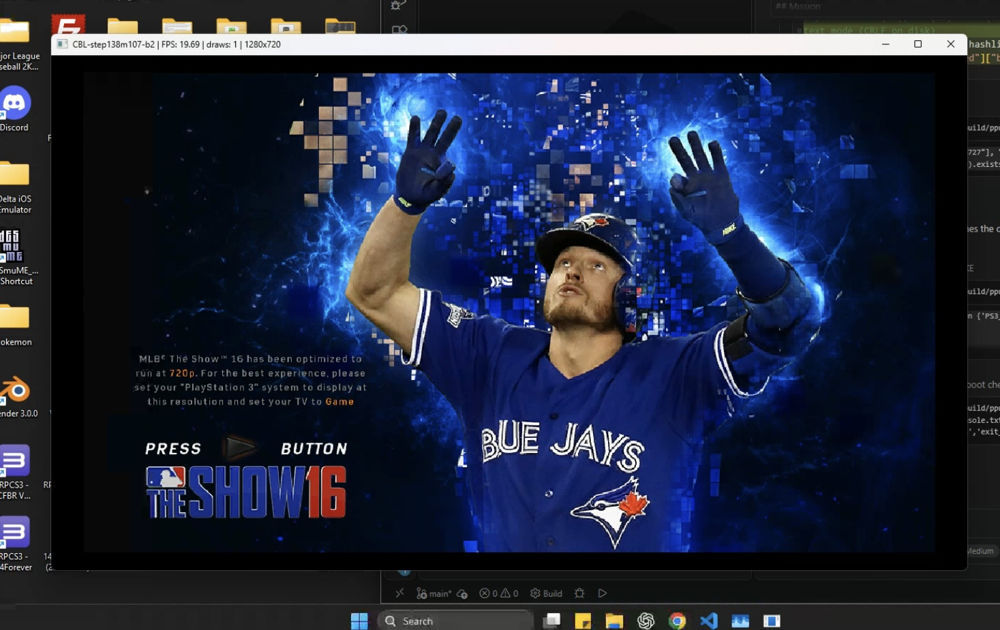

College Baseball Legacy — Dev Log #005
November 2–3, 2026 | Our First Correctly Rendered Title Screen!

WE HAVE A TITLE SCREEN!
After weeks of translating code, building a Windows runtime, debugging memory systems, investigating synchronization problems, and working through graphics issues, we've reached one of the most exciting milestones in College Baseball Legacy development.
MLB The Show 16's original title screen has successfully rendered in our native Windows build!
This is a huge moment for the project.
From Millions of Lines of Code to Something Visible
When we began this journey on October 16, our development environment was little more than a collection of tools and an ambitious plan.
Since then, we've generated millions of lines of translated code, compiled a native Windows executable, and worked through an enormous number of technical challenges.
Until now, much of our progress has been visible primarily through debugging logs, memory traces, and execution results.
Those are important engineering achievements, but they're not quite the same as seeing the game itself.
Now, for the first time, we have a correctly rendered title screen.
That is an entirely different kind of milestone.
Why This Is Important
A title screen might seem like a small accomplishment compared with playing an entire baseball game.
But consider what has to happen for that screen to appear.
The native executable must initialize enough of the game's systems to begin running.
The translated game code must interact with our Windows runtime.
Required game resources must be accessible.
The graphics system must process enough of the original rendering workload to produce the intended image.
And all of those systems must cooperate well enough to reach the title screen.
It doesn't prove that every subsystem works, but it demonstrates meaningful end-to-end progress.
Milestone M107: Advancing Beyond the Title Screen
We didn't stop at simply displaying the title screen.
Our next objective was to determine whether the native game could advance beyond the START prompt and enter the main menu.
For this milestone, we allowed Claude Code to navigate the startup sequence autonomously.
This meant the development agent handled the navigation and testing process rather than requiring us to manually interact with the game.
The experiment was deliberately limited to six game launches.
And the results were encouraging.
The game successfully advanced beyond the START prompt and reached the main menu!
However, the menu did not render completely.
Some portions appeared correctly, while others remained missing or incomplete.